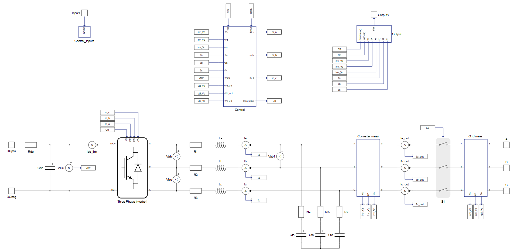
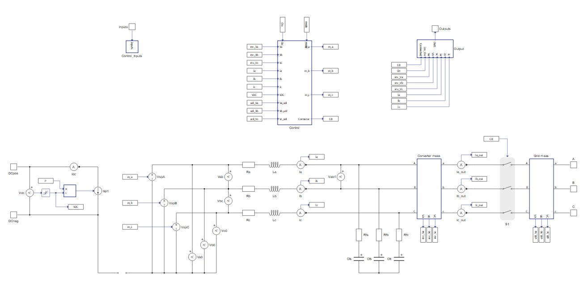
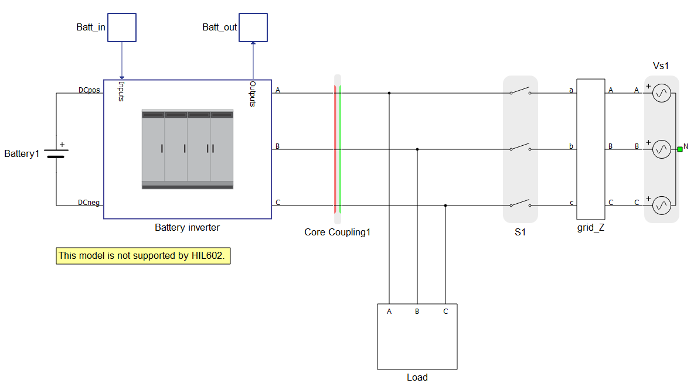
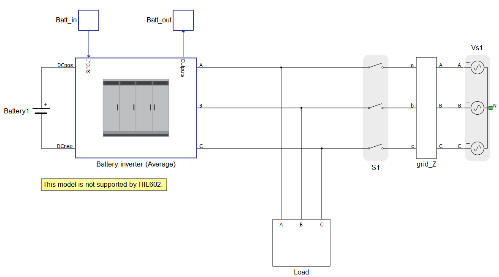
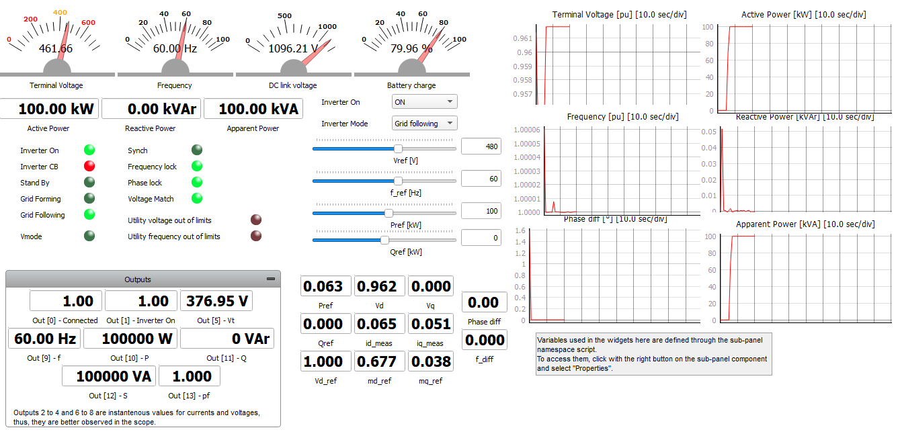
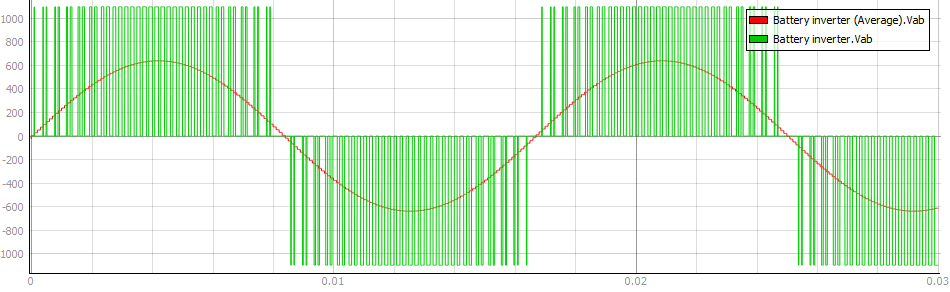
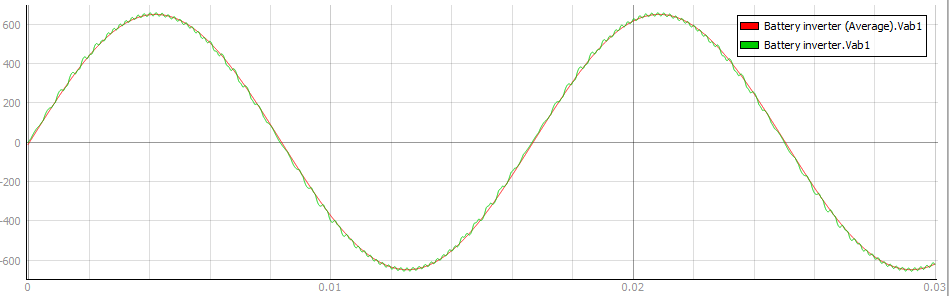
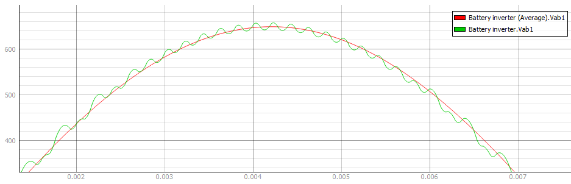

Switching and average models of grid-connected battery inverter
Performance comparison of the switching and average models of grid-connected battery inverters available in Schematic Editor
Introduction
The following application note explains the difference between the switching and average legacy models of the Grid-connected battery inverter. HIL device resource utilization for both models is explained in detail. Waveforms captured in both models are compared in the simulation part.
Model description
The model under test consists of a Battery inverter connected to the Grid (represented by a Three-phase voltage source component and a RL section) with a passive load (represented by RL components). This application note compares performance between the switching (Figure 1) and average (Figure 2) models of the Battery inverter component.


Both the average and switching models implement a three-phase device. From the perspective of controller functionality, these two models are identical. From the perspective of the power stage, they are almost the same except for one key difference: the switching model uses the detailed power electronics three-phase voltage source inverter component, while the average model uses three signal controlled voltage sources to emulate the behavior of the inverter.
The decision on what model to use depends on the device type or type of controller under test, the system-level (microgrid) scope, and the availability of the HIL computing resource. The switching model is preferred when a higher resolution is required, such as when we want to develop the control for the inverter itself. On the other hand, when we want to develop controllers for microgrids with distributed energy resources, we would normally use average models for the inverters since highly detailed switching models are generally not necessary for that application.
A comparison of HIL resources is described in Table 1.
| Model type | Switching model | Average model |
| No. of processing cores | 2 out of 3 | 1 out of 3 |
| Power electronic converter utilization | 3 out of 3 | 0 out of 3 |
| SP sources utilization | 0 out of 16 | 4 out of 16 |
| Max. matrix memory utilization | 75.76% | 4.74% |
| Max. time slot utilization | 73.75% | 62.5% |
| Simulation step, circuit solver | 1 µs | 1 µs |
| Signal processing, execution rate | 100 µs | 100 µs |
In order to run the simulation in real time on a HIL device, the heaviest resource constraints to be considered are the Power electronic converter utilization, the Max. matrix memory utilization, and the Max time slot utilization. The Power electronic converter utilization determines how many switching converters can fit into the model. For example, one three-phase inverter has converter weight of 3, meaning that only one three-phase switching converter can be included per processing core. Max matrix memory defines the maximum size of the sub-circuit in terms of the number of passive components and ideal switches. Time slot utilization represents the time necessary to execute all calculation from matrices where this "required time for calculation" must fit within one circuit solver simulation step.
In cases where the matrix memory utilization is above 100%, then the time slot utilization is full. In order to successfully compile the model in this case, either increase the circuit solver simulation step or further optimize the model to reduce the matrix memory utilization.
In this example, when the more detailed switching models for battery inverters are used, two processing cores are required in order to avoid memory overload. Thus, the model needs to be divided into the two cores using a core coupling component, as shown in Figure 3.

When using an average model for the battery inverter, both the battery inverter and grid part of the model can fit into one processing core, as shown in Figure 4.

The average model significantly reduces the use of HIL device resources. None of the power electronic converters’ resources are utilized, the amount of matrix memory needed is reduced, and the time slot utilization requirement is slightly improved, as shown in table 1. In contrast to the switching model which utilizes power electronic converters’ resources, the average model of the converter uses signal processing (SP) sources, where limit of the SP sources per processing core is 16.
Simulation
This application comes with a pre-built SCADA panel (Figure 5). The panel offers most essential user interface elements (widgets) to monitor and interact with the simulation in runtime.

A group of widgets in the Battery inverter sub-panel are used to interact with the Battery inverter (Figure 5). Signal waveforms are captured for both models separately using the Capture/Scope Widget and then exported to the Signal Analyzer tool for signal and waveform comparison.
The voltage waveform Vab is measured at the output of the converter before and after the filter that connects the converter to the grid. In the Switching Inverter model, the switching components are used to create an output voltage, and so the measured output voltage has a switching waveform (Figure 6, green). In the average model, the measured output voltage has a continuous waveform generated from ideal voltage sources, shown in (Figure 6, red).

The Output voltage waveforms Vab1 measured after the filter (Figure 7) for both the switching and average models have waveforms that are closely matching. When we zoom in, the output signal from the switching model shows a small ripple in its voltage waveform (Figure 8), which is caused by the switching semiconductor components. In this way, the choice between using switching or average battery inverter models lets you better allocate your HIL resources to meet the needs of your particular use case under test.


Test automation
We don’t have a test automation for this example yet. Let us know if you wish to contribute and we will gladly have you signed on the application note!
Example requirements
Table 2 provides detailed information about the file locations and hardware requirements for running the model in real-time, followed by the HIL device resource utilization when running the model using this minimal hardware configuration. This information is provided to help you with running and customizing the model as you see fit.
| Files | ||
|---|---|---|
| Typhoon HIL files | examples\models\microgrid\energy storage\battery inverter (switching)\ battery inverter.tse battery inverter.cus |
examples\models\microgrid\energy storage\battery inverter (average)\ battery inverter avg.tse battery inverter avg.cus |
| Minimum hardware requirements | ||
| No. of HIL devices | 1 | |
| HIL device model | HIL402 | |
| Device configuration | 1 | |
| HIL device resource utilization | ||
| No. of processing cores | 2 | 1 |
| Max. matrix memory utilization | 75.76% (core0) 0.49% (core1) |
4.74% |
| Max. time slot utilization | 73.75% (core0) 21.88% (core1) |
62.5% |
| Simulation step, electrical | 1 µs | 1 µs |
| Execution rate, signal processing | 100 µs | 100 µs |
Authors
[1] Kristian Monar
[2] Ognjen Gagrica